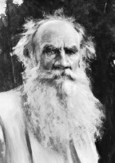

Tarih, birçok büyük romancı üretmesine rağmen, tartışmasız biçimde hiçbiri Leo Tolstoy’dan (1828-1910) daha fazla itibar görmemiştir. Bu Rus ustanın okuyucuları ve eleştirmenleri nezdinde tadını çıkardığı konumunun boyutlarını, yalnızca onu uzun zamandan beri tümüyle dokunulmaz bir deha olarak gören yazarlar arasındaki benzersiz itibarı aşmıştır. Tolstoy, üretken bir şekilde yazdı, ama şöhreti büyük oranda modern romanın öncülleri olarak işlev gören Savaş ve Barış (1865-1869) ve Anna Karenina (1875-1877) adlı iki büyük eserine dayanır. Gerçekçiliğin bu ustalık eserleri, günlük yaşamın felsefî temelleriyle derinden ilgili gözlemin inceliğini ve nitelendirmenin emsalsiz derinliğini birleştirir.

Rus soylularından varlıklı bir ailede dünyaya gelen Tolstoy, üniversite eğitimine başladı, ama yarısında sıkıldı ve diplomasını almadan bıraktı. Sonrasında huzursuz geçen yılları boyunca orduya hizmet etti, bir okul açtı ve kendisine herhangi bir yön bulamayarak Avrupa’da dolaştı. 1862’de Tolstoy, kötü şöhretli, mutsuz bir evlilik yaptı. Buna rağmen bu evlilikten tam on üç çocuğu oldu.
1860’ların ikinci yarısı sırasında Tolstoy, ilk büyük ustalık eseri olan Savaş ve Barış adlı romanını yazdı. Napolyon Savaşları sırasında kurgulanan bu muazzam roman, Fransa’nın Rusya’yı 1812 istilası – sert Rus kışına kurban düşen, ölüme mahkûm olmuş meşhur saldırı – ile zirve yapar. Roman, Napolyon, Çar I. Alexander ve gerçek hayattan başka şahsiyetlerle sahneyi paylaşan, yaratılmış büyük bir karakter ordusuyla gerçek ile kurguyu karıştırır. Karakter çokluğu eseri oldukça uzun kılmasına rağmen, geniş bir tarih kıvrımıyla kişisel hikâyelerin ustalıklı birleşimi nedeniyle, şaşırtıcı şekilde bir çırpıda okunur. Sonunda Tolstoy, tarihin en büyük şekillendirici gücünün, insan davranışının tahmin edilemezliği ve akıldışlığı olduğu sonucuna varır.
Tolstoy’un ikinci ustalık eseri olan Anna Karenina romanının samimi odak noktası, efsanevî açılış satırında gizidir: “Tüm mutlu aileler, birbirine benzer; her bir mutsuz aile kendi yolunda mutsuzdur.” Romana adını veren karakter, kendini işine adamış ama donuk bir memur olan kocasının vermeyi başaramadığı romantik aşkı arayan, zeki, kışkırtıcı bir kadındır. Çekici bir askerî yetkiliye aşık olduktan sonra toplumun zinasından dolayı onu aşağılamasının karşılığında evliliğini ve genç oğlunu, aşkını takip etmek üzere terk eder. Tolstoy’un, Anna’nın sondaki trajik intiharından önceki anlarını betimlediği kısım, bir gerçekçilik şaheseridir ve edebiyattaki en güzel sahnelerden biri olarak kabul edilir.
EK BİLGİLER:
1. Sonraki yıllarında Tolstoy, barışçılığı, anarşiyi ve samimi Hıristiyanlık’ı savundu. Nihayetinde eşiyle uzlaşmaz bir ayrılığa zemin hazırlayacak şekilde tüm maddî varlıklarından vazgeçti.
2. Tolstoy, resmî olarak kont unvanlıydı ve ailesinin Rus soyluluğunun ispatı olan uzun bir şecereye sahipti.